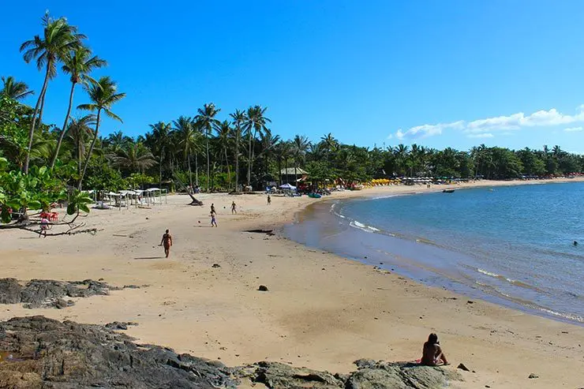
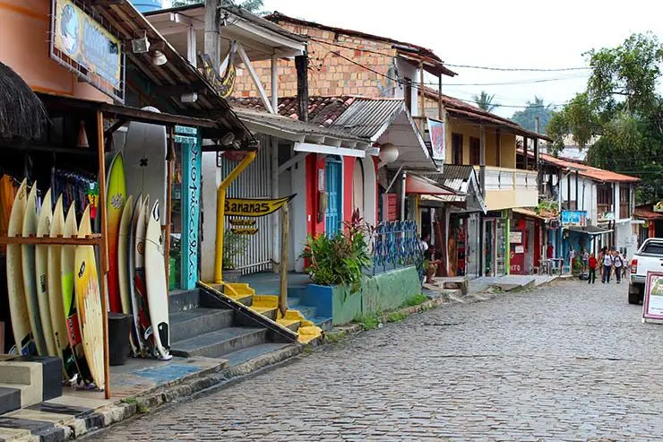
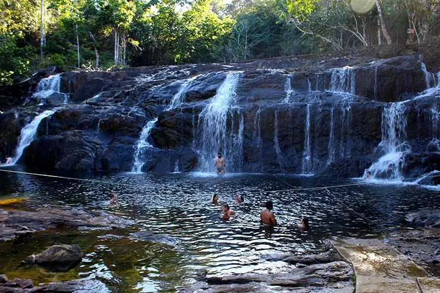

Curiosidades de Itacaré
Praia da concha
A Praia da Concha é a principal praia urbana de Itacaré, repleta de bares e barracas à beira-mar. Por ser uma praia localizada próxima ao centro de Itacaré, é um destino certo de muitos turistas que querem curtir o mar sem se preocupar com carro ou deslocamento, tornando-a uma praia bastante movimentada durante o verão. Formada pelo encontro do mar com o Rio de Contas, a Praia da Concha oferece um mar com águas calmas, beneficiando a prática de esportes, como Stand Up e Canoagem, que ficam disponíveis para serem alugados no local.
Rua da Pituba
Essa é a rua onde tudo acontece em Itacaré. Bares, restaurantes, cafés, lojinhas, artesanato, artistas de rua, música ao vivo… Algo que não falta na programação de quem quer saber o que fazer em Itacaré, principalmente à noite!
Cachoeiras
Itacaré também é cercada por cachoeiras. Uma das mais famosas é a de Tijuípe, a cerca de 15km da cidade. O acesso é fácil pela BA-001, que segue pra Ilhéus. A entrada custa R$17 (preço de 2017) e além do poço ótimo para banho, há uma boa estrutura com restaurante e banheiros. Ela também costuma entrar no roteiro do “tour das quatro praias” oferecido nas agências.